Bedienungsanleitung · Deutsch
Mathias' kleines PDF-Werkzeug
Siebzehn Werkzeuge für ein wiederkehrendes Problem: gescannte Unterlagen nachträglich in eine ordentliche, korrekt formatierte PDF-Datei verwandeln — gerade ziehen, zerlegen, wieder zusammensetzen, auf Normmaß bringen, verkleinern. Diese Anleitung zeigt jedes Werkzeug an einem echten Beispiel.
Werkzeug 01
PDF erstellen
Der Ausgangspunkt für praktisch jede Sitzung: PDF-Dateien, JPGs, BMPs und TIFFs (auch mehrseitige) werden per Drag&Drop in eine gemeinsame Dateiliste geladen und in genau dieser Reihenfolge zu einer einzigen PDF zusammengefügt. Diese Liste ist der Dreh- und Angelpunkt der ganzen App — jedes andere Werkzeug arbeitet auf derselben Liste weiter, ohne dass zwischendurch exportiert und neu geladen werden muss.
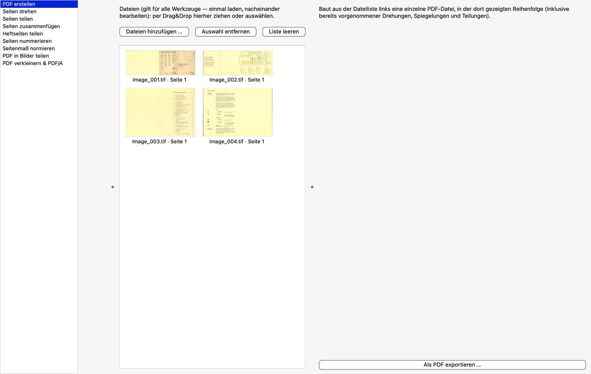
- Dateien per Dateien hinzufügen … oder Drag&Drop in die mittlere Liste laden.
- Reihenfolge bei Bedarf per Ziehen in der Liste ändern.
- Optional: mit anderen Werkzeugen vorbereiten (drehen, teilen, normieren) — die Liste bleibt dabei erhalten.
- Als PDF exportieren … klicken und Speicherort wählen.
Werkzeug 02
Seiten drehen
Schräg eingescannte Seiten direkt mit der Maus geradeziehen: in der Vorschau ziehen dreht die Seite frei, feste rote Linien dienen als Wasserwaage. Dazu die üblichen Schnellaktionen — 90°, 180°, Spiegeln — sowie eine Funktion für Doppelseiten, die abwechselnd in verschiedene Richtungen quer eingescannt wurden.
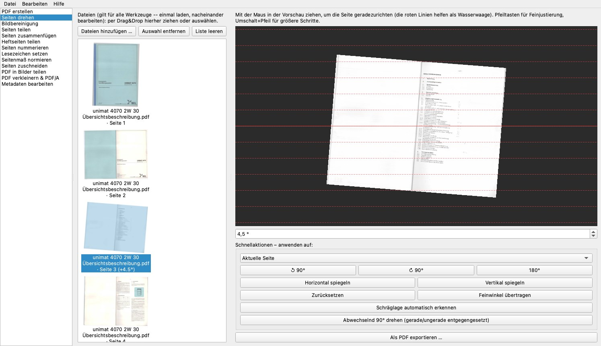
- Seite in der Liste anklicken, dann in der Vorschau mit gedrückter Maustaste ziehen, bis der Inhalt an den roten Linien ausgerichtet ist.
- Für exakte Werte: Zahlenfeld unter der Vorschau nutzen, oder mit den Pfeiltasten in 0,1°-Schritten feinjustieren (Umschalt (⇧)+Pfeil = 1°-Schritte).
- Für rechte Winkel/Spiegelung: die Schnellaktionsknöpfe verwenden.
- Geltungsbereich (aktuelle Seite / Auswahl / alle) oben in der Liste festlegen, bevor eine Schnellaktion angewendet wird.
- Bei quer gescannten Doppelseiten mit wechselnder Ausrichtung: Abwechselnd 90° drehen auf die gesamte Auswahl anwenden.
- Bei großen Stapeln: Schräglage automatisch erkennen schlägt den Winkel per Texterkennung vor (weiter mit der Maus oder dem Zahlenfeld korrigierbar); bei Fotos oder grafiklastigen Seiten ohne erkennbares Zeilenmuster bleibt die Seite unverändert.
Werkzeug 03
Bildbereinigung
Für gescannte Schwarzweiß-/Textvorlagen: wandelt in reines Schwarzweiß um (Schwellwert, auf Wunsch automatisch per Otsu-Verfahren vorgeschlagen) und/oder entfernt kleine dunkle Flecken (Staub, Druckpunkte). Beide Schritte sind unabhängig voneinander zuschaltbar.
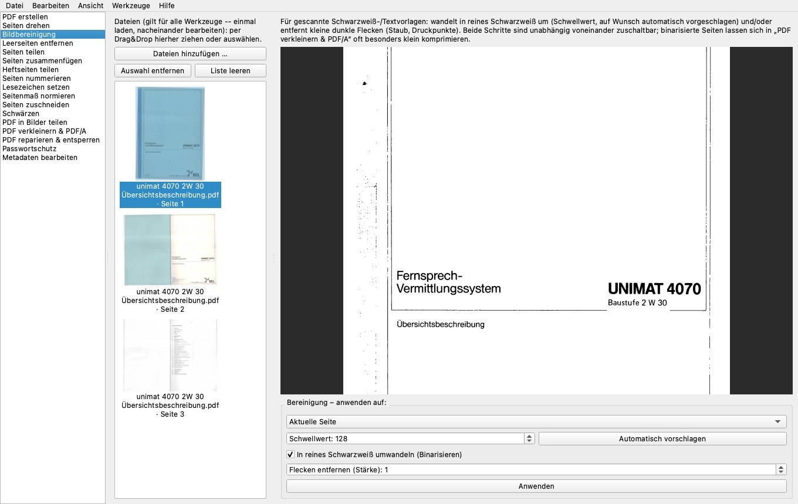
- Seite auswählen — die Vorschau zeigt sofort, wie sich Schwellwert, Binarisieren und Entflecken auf genau diese Seite auswirken.
- Automatisch vorschlagen berechnet per Otsu-Verfahren einen Schwellwert, der Text/Linien am deutlichsten vom Hintergrund trennt — oder von Hand feinjustieren.
- In reines Schwarzweiß umwandeln (Binarisieren) bei Bedarf abschalten, um nur Flecken zu entfernen und Grau-/Farbwerte sonst unverändert zu lassen.
- Geltungsbereich wählen und Anwenden klicken.
Werkzeug 04
Leerseiten entfernen
Sucht im gewählten Bereich nach wahrscheinlich leeren Seiten (per Tinte-Anteil) — typisch beim automatisierten Scannen mit Einzug (Duplex mit gelegentlich unbedruckter Rückseite, leere Trennblätter). Findet nur Vorschläge, löscht nichts automatisch: die gefundenen Seiten erscheinen in einer Übersicht mit Häkchen (alle vorausgewählt), zum Abwählen einzelner Seiten vor dem tatsächlichen Entfernen.
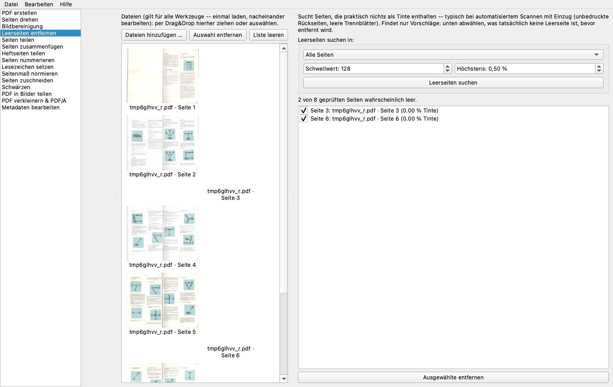
- Geltungsbereich wählen (meist Alle Seiten, da man typischerweise den ganzen frisch geladenen Stapel prüft) und Leerseiten suchen klicken.
- Jede gefundene Seite erscheint in der Übersicht mit Häkchen und ihrem gemessenen Tinte-Anteil — standardmäßig alle angehakt.
- Was tatsächlich keine Leerseite ist, dort abwählen.
- Ausgewählte entfernen klicken.
Werkzeug 05
Seiten teilen
Zerschneidet eine Seite entlang senkrechter und/oder waagerechter Linien in ein Zeilen-×-Spalten-Raster — etwa für zwei Buchseiten auf einem Doppelseiten-Scan, oder mehrere Formularfelder auf einem gescannten Blatt. Die Schnittlinien werden mit der Maus gezogen, mit Zoom für punktgenaues Treffen.
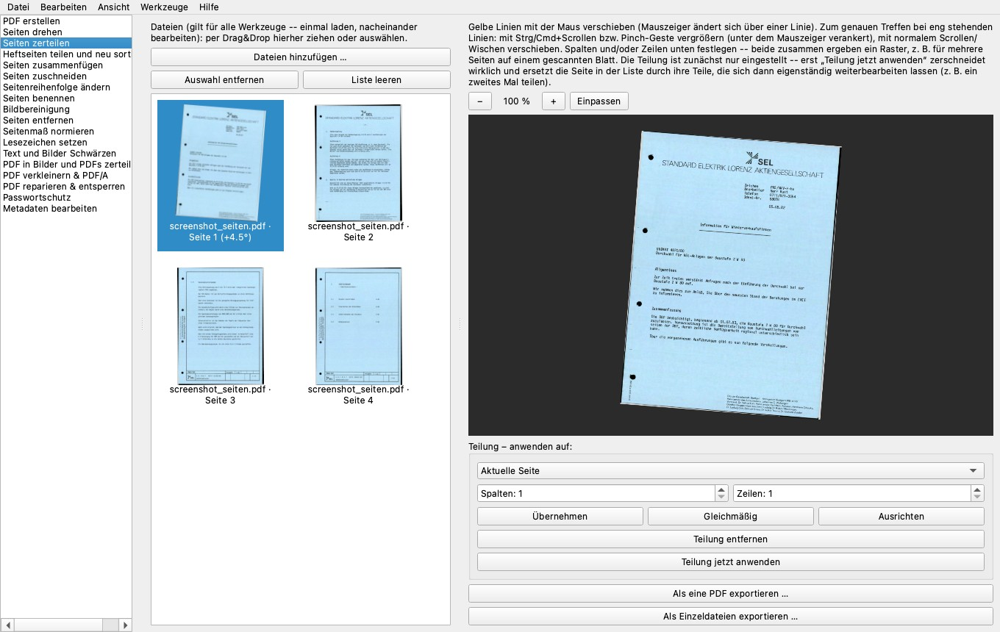
- Spalten- und/oder Zeilenzahl festlegen, Übernehmen klicken — die Linien erscheinen gleichmäßig verteilt.
- Jede Linie einzeln mit der Maus verschieben; zum genauen Treffen mit Strg/Cmd (⌃/⌘)+Scrollen bzw. Pinch-Geste vergrößern.
- Automatisch ausrichten zieht jede Linie auf die ruhigste (leerste) Bildstelle in der Nähe — gut für eine Heftmitte statt mitten im Text.
- Teilung jetzt anwenden zerschneidet die Seite wirklich; die Teile ersetzen die Seite als eigenständige, weiter bearbeitbare Einträge in der Liste.
Werkzeug 06
Seiten zusammenfügen
Das Gegenstück zum Teilen-Werkzeug: mehrere kleinere Scans — etwa A4-Blätter einer A1-Zeichnung oder eines Schaltplans — werden zu einer großen Seite zusammengesetzt. Ein Klick erzeugt eine erste Kante-an-Kante-Anordnung; danach lässt sich jedes Teil frei verschieben, fein nachdrehen und an den Rändern beschneiden.
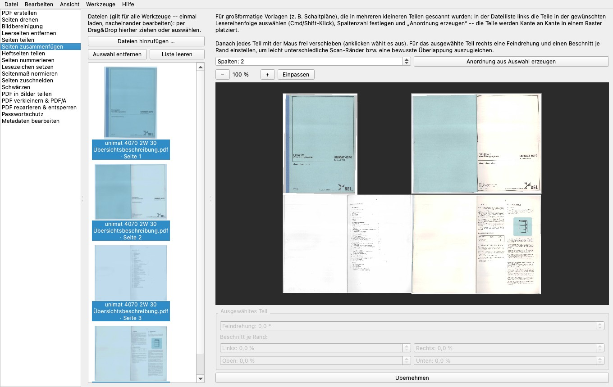
- Die Teile in der Dateiliste in der gewünschten Lesereihenfolge auswählen (Cmd (⌘)/Shift (⇧)-Klick).
- Spaltenzahl festlegen (z. B. 2 für ein 2×2-Raster aus vier Teilen) und Anordnung aus Auswahl erzeugen klicken.
- Jedes Teil in der Vorschau anklicken (wählt es aus) und mit der Maus an die richtige Stelle ziehen.
- Für das ausgewählte Teil rechts eine Feindrehung (0,1°-Schritte) und einen Beschnitt je Rand in % einstellen, um unterschiedliche Scan-Ränder oder eine bewusste Überlappung auszugleichen.
- Übernehmen ersetzt die ursprünglich ausgewählten Teile durch die eine zusammengesetzte Seite.
Werkzeug 07
Heftseiten teilen
Für geheftete Broschüren, die als Doppelseiten-Scans in ihrer physisch gestapelten Reihenfolge vorliegen (Scan 1 zeigt die letzte und die erste Buchseite, Scan 2 die davor und danach usw.): Dieses Werkzeug teilt jede Doppelseite automatisch mittig und bringt beide Hälften in die richtige Lesereihenfolge — nach der klassischen Sattelheft-Formel.
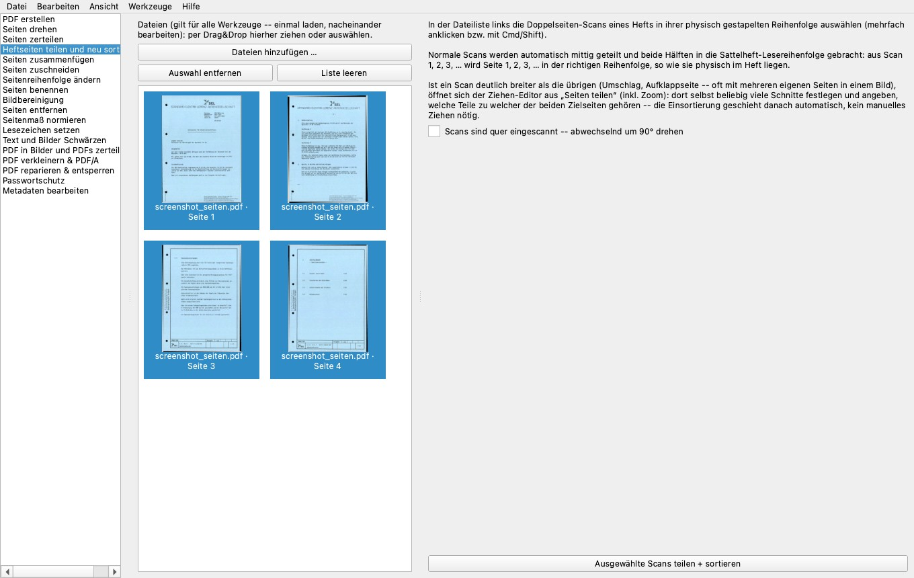
- Alle Doppelseiten-Scans des Hefts in ihrer physisch gestapelten Reihenfolge auswählen.
- Falls quer eingescannt (abwechselnd um 90° in wechselnde Richtungen): Häkchen bei Scans sind quer eingescannt setzen.
- Ausgewählte Scans teilen + sortieren klicken.
- Ist ein Scan deutlich breiter als die übrigen (Umschlag mit Aufklappteil): Es öffnet sich automatisch derselbe Ziehen-Editor wie beim Teilen-Werkzeug — dort beliebig viele Schnitte setzen und angeben, welche Teile zur linken bzw. rechten Zielseite gehören. Die Einsortierung geschieht danach vollautomatisch.
Werkzeug 08
Seiten nummerieren
Für eine durcheinandergeratene Seitenfolge — von Hand jeder Seite eine Zielnummer zuweisen, dann in einem Schritt neu anordnen. Es wird nichts auf die Seite geschrieben, nur die Reihenfolge in der Liste ändert sich. Alternativ: automatische Sortierung nach Aufnahme-/Erstellungsdatum, inklusive Umbenennen der Dateien auf der Festplatte.
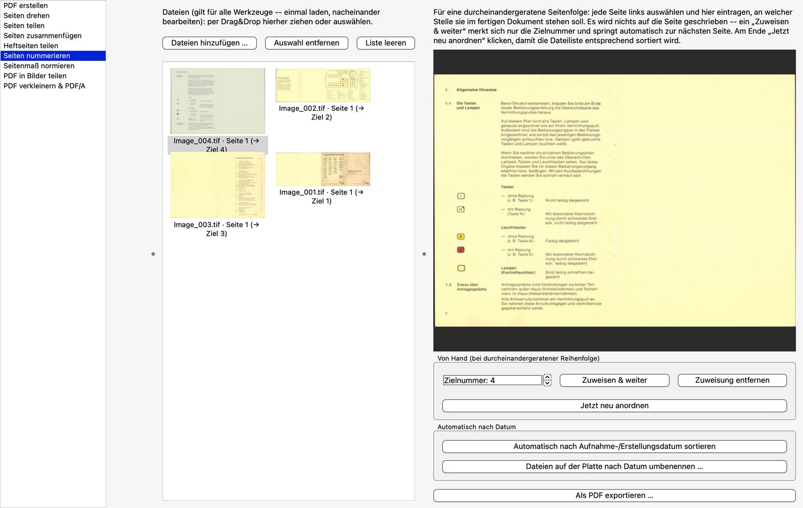
- Seite anklicken, Zielnummer eintragen, Zuweisen & weiter klicken — springt automatisch zur nächsten Seite.
- Nach Zuweisung aller Seiten: Jetzt neu anordnen klicken.
- Alternativ, wenn Aufnahmedatum/Dateidatum die richtige Reihenfolge ergibt: Automatisch nach Aufnahme-/Erstellungsdatum sortieren.
- Sollen auch die Originaldateien auf der Platte umbenannt werden: Dateien auf der Platte nach Datum umbenennen ….
Werkzeug 09
Lesezeichen setzen
Für Broschüren und Bücher, die man ohnehin schon Seite für Seite durchgeht: jeder Seite optional einen Kapitel- oder Unterkapitel-Titel geben. Wird beim Speichern automatisch zu einem Lesezeichen/Inhaltsverzeichnis (Outline) in der PDF-Datei — ganz ohne separaten Exportschritt.
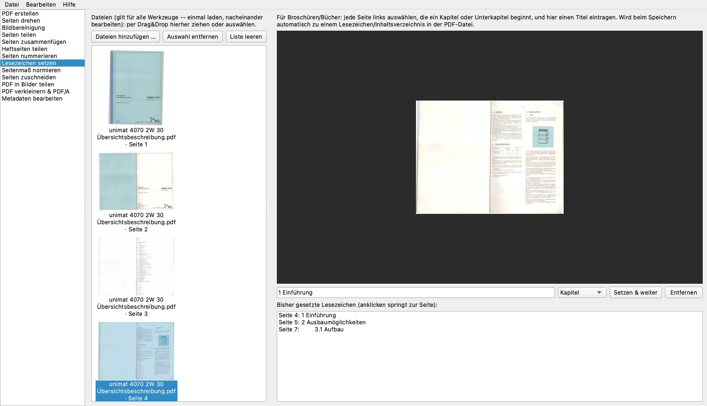
- Seite auswählen, die ein Kapitel oder Unterkapitel beginnt, Titel eintragen.
- Ebene wählen — Kapitel oder Unterkapitel — dann Setzen & weiter klicken; springt automatisch zur nächsten Seite.
- Die Übersicht unten zeigt alle bislang gesetzten Lesezeichen in Seitenreihenfolge — ein Klick darauf springt zur jeweiligen Seite.
- Wird beim nächsten Speichern automatisch als Gliederung in die PDF-Datei übernommen.
Werkzeug 10
Seitenmaß normieren
Bringt Seiten auf ein exaktes physisches Maß — ein DIN-A-Format, ein US-Format (Letter, Legal, …) oder ein freies Maß. Schwarze Scan-Ränder, wie sie entstehen, wenn die Vorlage kleiner als das Scannerglas war, werden dabei je Kante automatisch erkannt und abgeschnitten; ohne erkennbaren Rand wird direkt skaliert.
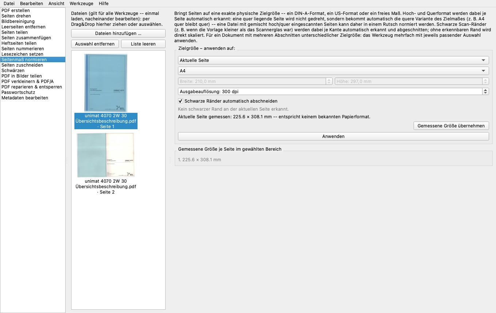
- Seite anklicken — das Werkzeug misst automatisch die aktuelle (Inhalts-)Größe und schlägt ein passendes Format vor, falls eines nahe genug liegt (DIN A oder US).
- Gemessene Größe übernehmen setzt diesen Vorschlag direkt als Zielgröße — oder Format bzw. eigenes Maß von Hand wählen.
- Ausgabeauflösung (dpi) und ob schwarze Ränder abgeschnitten werden sollen, festlegen.
- Geltungsbereich wählen und Anwenden klicken.
| DIN-Format | Maße (mm) | US-Format | Maße (in) |
|---|---|---|---|
| A3 | 297 × 420 | US Letter | 8,50 × 11,00 |
| A4 | 210 × 297 | US Legal | 8,50 × 14,00 |
| A5 | 148 × 210 | US Executive | 7,25 × 10,50 |
Werkzeug 11
Seiten zuschneiden
Schneidet Seiten von allen vier Rändern aus um ein frei wählbares Maß zu — z. B. um einen Lochrandstreifen oder Heftrand präzise zu entfernen. Anders als „Seitenmaß normieren“ wird dabei nicht auf eine Zielgröße skaliert, sondern genau das angegebene Maß abgeschnitten; die Ergebnisgröße ergibt sich daraus und wird live angezeigt.
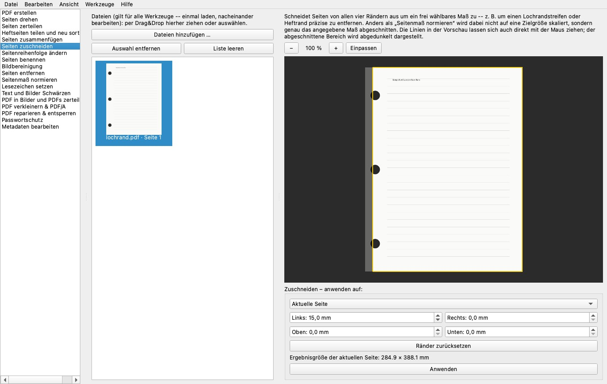
- Die vier Randmaße als Zahlenfelder eintragen (Links, Oben, Rechts, Unten) — oder die gelben Linien direkt in der Vorschau mit der Maus ziehen.
- Zum genauen Treffen bei kleinen Randmaßen: mit Strg/Cmd (⌃/⌘)+Scrollen bzw. Pinch-Geste vergrößern.
- Die Ergebnisgröße wird unterhalb der Randfelder live angezeigt, inklusive Formatvorschlag, falls einer passt.
- Geltungsbereich wählen und Anwenden klicken — dieselben Randmaße werden auf jede Seite im gewählten Bereich angewendet.
Werkzeug 12
Schwärzen
Beliebig viele Bereiche einer Seite dauerhaft unkenntlich machen: deckende Rechtecke, frei mit der Maus gezeichnet, verschoben und in der Größe verändert. Anders als ein einfacher schwarzer Kasten werden die Rechtecke beim Speichern wirklich in die Bildpixel eingebrannt — betroffene Seiten werden dafür automatisch gerastert, auch wenn sie sonst verlustfrei als Vektorseite exportiert würden, damit garantiert kein Originaltext darunter erhalten bleibt.
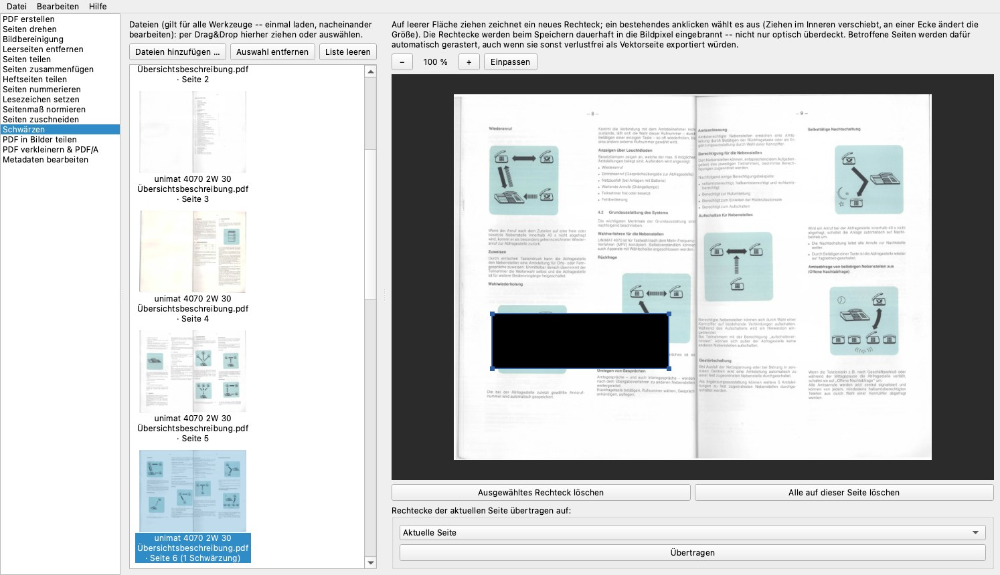
- Auf leerer Fläche ziehen zeichnet ein neues Rechteck; ein bestehendes anklicken wählt es aus.
- Ziehen im Inneren verschiebt das ausgewählte Rechteck, Ziehen an einer Ecke ändert die Größe.
- Ausgewähltes Rechteck löschen bzw. Alle auf dieser Seite löschen entfernt wieder.
- Übertragen kopiert die Rechtecke der aktuellen Seite auf einen wählbaren Bereich weiterer Seiten — praktisch für wiederkehrende Angaben (z. B. eine Aktennummer oben auf jeder Seite).
Werkzeug 13
PDF in Bilder teilen
Der Rückweg aus der PDF heraus: die gemeinsame Dateiliste als einzelne, durchnummerierte Bilddateien speichern (PDF, JPEG, TIFF oder BMP je Seite) oder als eine mehrseitige TIFF-Datei — z. B. für eine Weiterverarbeitung, die einzelne Bilddateien statt einer PDF erwartet.
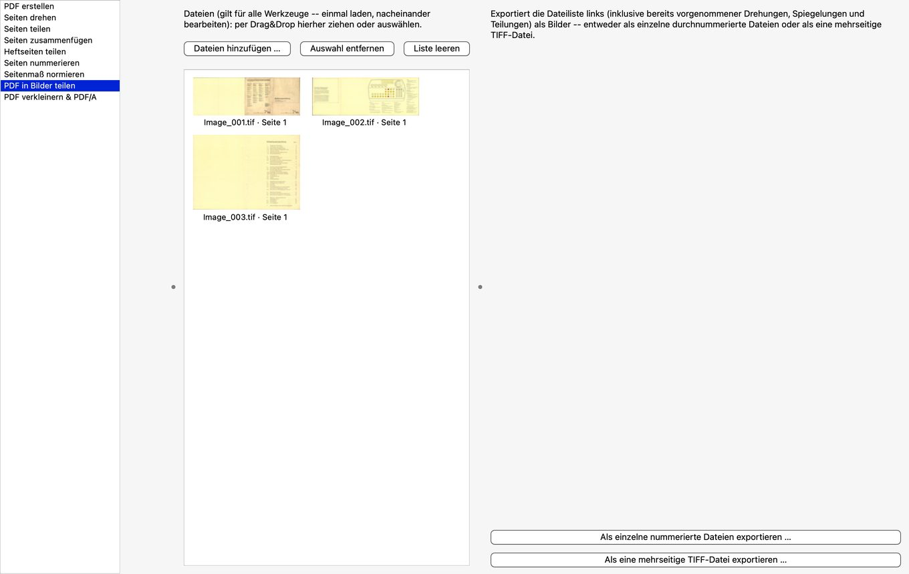
- Als einzelne nummerierte Dateien exportieren … für getrennte Dateien — Format, Basisname, Startnummer und Stellenzahl im folgenden Dialog wählen.
- Oder Als eine mehrseitige TIFF-Datei exportieren … für eine gemeinsame Datei mit allen Seiten.
Werkzeug 14
PDF verkleinern & PDF/A
Drei getrennte, unabhängig nutzbare Funktionen: die Dateigröße großer Scans durch JPEG-Kodierung deutlich verkleinern (Qualität und Höchstauflösung wählbar — bereits effizient komprimierte Schwarzweißseiten werden dabei automatisch unverändert durchgereicht, da JPEG dort meist größer und schlechter wäre), eine bestehende PDF verlustfrei strukturell komprimieren, oder eine PDF mit den Kennzeichen für das Archivformat PDF/A-2b versehen.
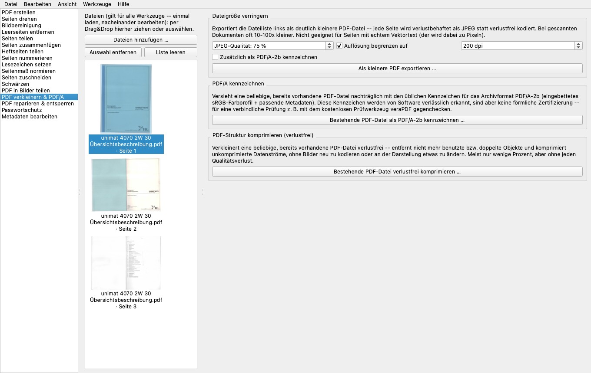
- Für kleinere Dateien: JPEG-Qualität und Höchstauflösung einstellen, Als kleinere PDF exportieren ….
- Ist das Ergebnis nicht kleiner als das Original, weist die App darauf hin — meist ein Zeichen, dass die Quelle schon effizient komprimiert war; dann Qualität/Auflösung weiter senken.
- Für die Archivkennzeichnung: bestehende PDF-Datei wählen, Bestehende PDF-Datei als PDF/A-2b kennzeichnen ….
- Für verlustfreie Kompression ohne Qualitätsverlust: Bestehende PDF-Datei verlustfrei komprimieren ….
Werkzeug 15
PDF reparieren & entsperren
Drei getrennte, unabhängig nutzbare Funktionen, die nur thematisch zusammengehören (beschädigte bzw. gesperrte Dateien): eine PDF-Datei reparieren, die sich nicht mehr öffnen lässt; den Passwortschutz einer Datei entfernen, wenn das Passwort bekannt ist; oder ein vergessenes Passwort wiederherstellen (Wörterbuch-Angriff oder Brute-Force).
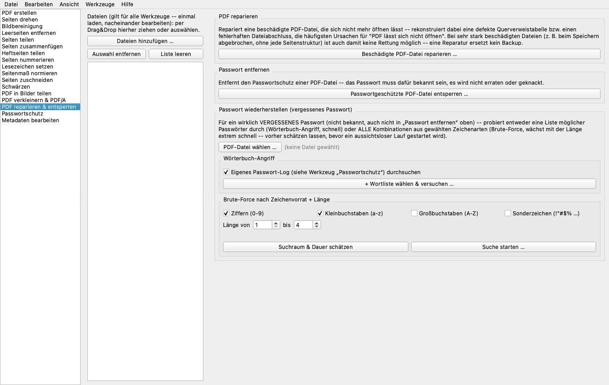
- PDF reparieren: beschädigte Datei wählen, Zielort wählen, Beschädigte PDF-Datei reparieren … — rekonstruiert eine defekte Querverweistabelle bzw. einen fehlerhaften Dateiabschluss, die häufigsten Ursachen für "PDF lässt sich nicht öffnen".
- Passwort entfernen: Datei wählen, bekanntes Passwort eingeben, Zielort wählen — speichert eine unverschlüsselte Kopie.
- Passwort wiederherstellen — Wörterbuch-Angriff: Datei wählen, optional eine Wortliste (eine Zeile je Kandidat) hinzunehmen und/oder das eigene Passwort-Log durchsuchen lassen.
- Passwort wiederherstellen — Brute-Force: Zeichenarten und Längenbereich wählen, zuerst Suchraum & Dauer schätzen (misst die tatsächliche Geschwindigkeit an dieser Datei), erst dann Suche starten … — jederzeit über den Abbrechen-Knopf im Fortschrittsfenster stoppbar.
Werkzeug 16
Passwortschutz
Vier getrennte Funktionen, die sich eine gemeinsame Verschlüsselungseinstellung (Verfahren, Rechte-Passwort, Berechtigungen) teilen: eine einzelne Datei mit einem Passwort versehen, einen ganzen Ordner samt Unterordnern verschlüsseln, Dateien anhand einer Liste verschlüsseln, sowie ein Log der vergebenen Passwörter führen.
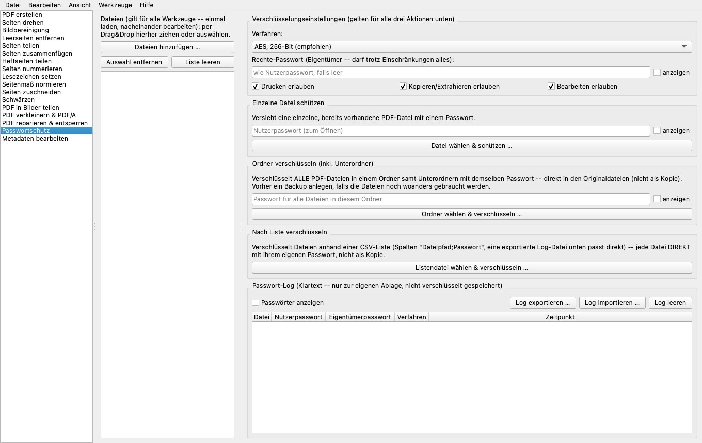
- Verschlüsselungseinstellungen (oben, gelten für alle drei Aktionen): Verfahren (RC4 40/128-Bit oder AES 128/256-Bit — AES 256-Bit voreingestellt), optionales Rechte-Passwort (bleibt es leer, gilt das Nutzerpasswort auch als Rechte-Passwort), sowie Drucken/Kopieren/Bearbeiten einzeln erlauben oder sperren.
- Einzelne Datei schützen: Nutzerpasswort eingeben, Datei wählen, Zielort wählen.
- Ordner verschlüsseln: Passwort eingeben, Ordner wählen — verschlüsselt ALLE PDF-Dateien darin und in allen Unterordnern direkt in den Originaldateien, nicht als Kopie.
- Nach Liste verschlüsseln: CSV-Datei wählen (Spalten "Dateipfad;Passwort" — eine exportierte Log-Datei passt direkt) — verschlüsselt jede genannte Datei direkt mit ihrem eigenen Passwort.
- Passwort-Log: merkt sich automatisch, welche Datei mit welchem Passwort versehen wurde. Passwörter anzeigen blendet sie ein/aus, Log exportieren/importieren … tauscht es als CSV-Datei.
Werkzeug 17
Metadaten bearbeiten
Anders als alle anderen Werkzeuge gilt hier ein einziger Satz Angaben für das gesamte Dokument, nicht pro Seite: Titel, Autor, Anbieter, Produkt, Version, Releasedatum und Stichwörter. PDF kennt nur eine feste Anzahl Standardfelder — die Vorschau zeigt genau, wie diese Angaben tatsächlich hineinfließen.
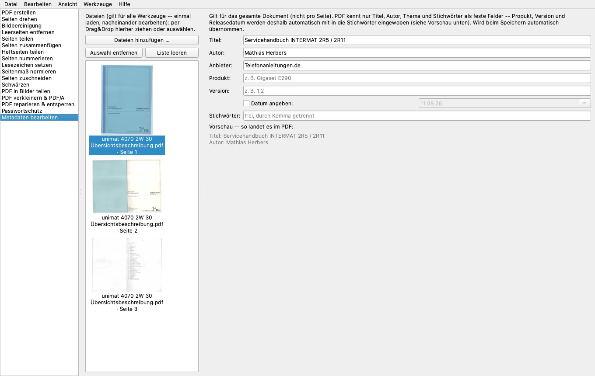
- Titel, Autor und Anbieter eintragen — Anbieter ist mit dem in den Einstellungen hinterlegten Standard vorbelegt (sonst mit dem zuletzt verwendeten).
- Produkt, Version und optional ein Releasedatum ergänzen — beides gibt es in PDF nicht als eigenes Feld, fließt deshalb automatisch mit in die Stichwörter ein (siehe Vorschau unten im Werkzeug).
- Wird automatisch bei jedem Speichern übernommen — kein eigener Anwenden-Knopf nötig.
- „Speichern unter“ schlägt daraus automatisch einen Dateinamen vor, z. B. „Produkt - Titel vVersion (Datum).pdf“.
Einstellungen
Über das Menü Bearbeiten → Einstellungen … (unter macOS automatisch im Programmmenü, Tastenkürzel Cmd+, (⌘,) bzw. Strg+, (⌃,)) lassen sich Oberflächensprache, Maßeinheit, Datumsformat, Standard-Anbieter und Schwärzungsfarbe einstellen. Sprache und Maßeinheit bleiben dabei bewusst von Hand gewählt statt automatisch aus den Systemeinstellungen übernommen, da die bearbeiteten PDFs aus jedem Land stammen können, unabhängig davon, wie dieser Rechner eingestellt ist.
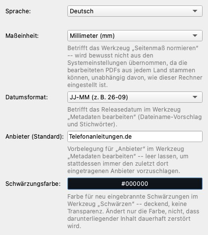
- Sprache: Deutsch (Vorgabe) oder Englisch — wirkt sich erst nach einem Neustart des Programms aus.
- Maßeinheit: Millimeter (Vorgabe) oder Zoll — wirkt sich sofort aus, auch während „Seitenmaß normieren“ bereits offen ist.
- Datumsformat: für das Releasedatum im Werkzeug „Metadaten bearbeiten“ (Dateiname-Vorschlag und Stichwörter) — JJ-MM, JJJJ-MM-TT oder TT.MM.JJJJ.
- Anbieter (Standard): Vorbelegung für „Anbieter“ im Werkzeug „Metadaten bearbeiten“ — leer lassen, um stattdessen immer den zuletzt dort eingetragenen Anbieter vorzuschlagen.
- Schwärzungsfarbe: Farbe für neu eingebrannte Schwärzungen im Werkzeug „Schwärzen“ — Klick öffnet den systemeigenen Farbwähler (unter macOS mit Farbkreis).
Systemvoraussetzungen
| Plattform | Mindestens |
|---|---|
| macOS | 11 (Big Sur), 64-Bit — Apple Silicon oder Intel |
| Windows | 10, 64-Bit |
Rund 250 MB freier Speicherplatz für das Programm, zusätzlich freier Platz für Zwischendateien während der Bearbeitung (grob das 2- bis 3-fache der Größe der bearbeiteten PDFs). Keine Internetverbindung und keine zusätzliche Software nötig (kein Python, kein ImageMagick/Ghostscript) — beide Programmversionen sind vollständig eigenständig.
Bezugsquelle & Lizenz
Kostenlos bereitgestellt von Telefonanleitungen.de. Lizenziert unter der GNU General Public License 3.0 — freie Software, die auch verändert und weiterverbreitet werden darf.